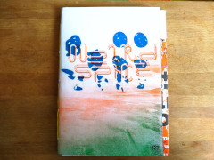
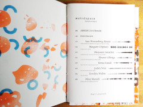
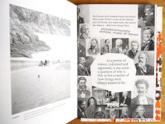
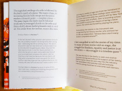
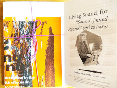
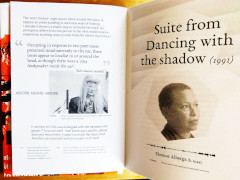
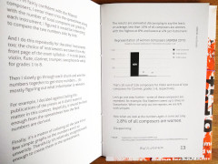
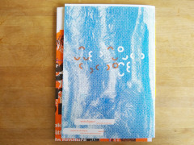
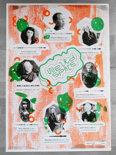

#^------------------------------
#^title trim=ends
weirdspace
#^------------------------------
#^body trim=ends form=markdown
weirdspace
{zine_220419}
{ep_220419}
{ep_250219}
{ep_280119}
{ep_311218}
{ep_100918}
{about}
#^zine_220419
weirdspace Zine 220419


{text_zine_220419}
#^ep_220419
Episode 220419
{text_220419}
#^ep_250219
Episode 250219
{text_250219}
#^ep_280119
Episode 280119
{text_280119}
#^ep_311218
Episode 311218
{text_311218}
#^ep_100918
Episode 100918
{text_100918}
#^shows
#^text_zine_220419 trim=ends form=markdown

The weirdspace Zine 220419 contains research and data collated from the ABRSM (Associated Board of the Royal Schools of Music) website, examining the representation of women composers in the 2019 syllabuses. It also contains brief biographies of the author and composers featured in Episode 220419, as a read-along while you listen to the podcast.
The zine is 60 pages (14.5cm x 20.5cm) printed on 140gsm Cyclus Offset recycled paper, riso covers on 300gsm, pamphlet stitched with cotton thread and includes a pull out A3 riso poster.
Get a copy for a tenner from me in person or send me an email notshi@gmail.com for a copy through mail.
#^text_220419 trim=ends form=markdown
Reading excerpts from A Rose in June by Margaret Oliphant⚏
Track listing
1. Motett, "Stilla komme och välkomna vare dagens slut och lön!" by Sara Wennerberg-Reuter♬; St. Pauli Vokalensemble
2. Living Sound by Maryanne Amacher♬
3. Suite from Dancing with the shadow by Eleanor Alberga♬; Odaline de la Martinez
4. Teen Murti for String Orchestra by Reena Esmail♬; River Oaks Chamber Orchestra
5. Airs from Another Planet by Judith Weir♬; Odaline de la Martinez
6. Dervish by Errollyn Wallen♬; the Continuum Ensemble
7. Sinfonia (for Orbiting Spheres) by Missy Mazzoli♬; Karina Canellakis
#^text_250219 trim=ends form=markdown
Reading excerpts from Fidelity by Susan Glaspell⚏
Track listing
1. Concerto For Violoncello And Strings - I. (Turbulent, Tense) by Dobrinka Tabakova♬
2. Suite in Old Style - II. The Rose Garden, By Moonlight by Dobrinka Tabakova
3. Suite in Old Style - III. Riddle of the Barrel-Organ Player - Postlude: Hunting and Finale by Dobrinka Tabakova
4. Quatuor De Saxophone - Misterioso by Ida Gotkovsky♬
5. Quatuor De Saxophone-Linéaire by Ida Gotkovsky
6. Chin: Piano Concerto - Movement I - IV by Unsuk Chin♬
7. Soleils couchants by Nadia Boulanger♬
#^text_280119 trim=ends form=markdown
Reading excerpts from The Shuttle by Frances Hodgson Burnett⚏
Track listing
1. Like the Lily by Frances White: Centre Bridge (Electroacoustic Works)♬
2. My Dark Heart Andante by Elizabeth Maconchy♬
3. El Colapso by Angélica Negrón♬
4. My Dark Heart Comodo, flessibile by Elizabeth Maconchy
5. Written in Smoke by Carla Bozulich featuring Sarah Lipstate♬
6. My Dark Heart Andante 2 by Elizabeth Maconchy
7. The Fright by Noveller♬
#^text_311218 trim=ends form=markdown
Reading excerpts from A Lost Lady by Willa Cather⚏
Track listing
1. Magnetite by Emily Howard♬; Royal Liverpool Philharmonic Orchestra
2. Bioluminescense by Lydia Ayers♬
3. The Sun Was Chasing Venus by Charlotte Bray♬; Barbara Buntrock & Amaryllis Quartet
4. Concert At Wbai Free Music Store by Suzanne Ciani♬
5. Home by Angélica Negrón♬
#^text_100918 trim=ends form=markdown
Reading excerpts from Thy Heart's Desire by Netta Syrett⚏
Track listing
1. Esperando el coche by Carmen Barradas♬; Patricia Pérez (piano)
2. Prelude in G minor by Elsa Barraine♬; Anne Laver (organ)
3. Sonata in E minor by Florence Price♬; Maria Corley (piano)
4. Soir d’hiver by Nadia Boulanger♬; Nicole Cabell (soprano)
5. 'Round Midnight by Valerie Capers♬
6. J’ai frappé by Nadia Boulanger♬; Nicole Cabell (soprano)
#^text trim=ends form=markdown
reading excerpts from
Track listing:
1.
2.
3.
4.
5.
6.
#^about
#^css same=append
.def {padding:30px 0 10px 0;}
.def span {color:#fff;}
.latest {width:960px; margin:0 auto; padding-bottom:30px; border-bottom:1px dashed #666;}
li {margin-left:30px;}
.text, .cast {display:block; width:960px;}
.text a {font-size:1em; padding:0 5px;}
.text span {color:#9ad7d6;}
.text div {padding:10px 40px 0px 0; display:inline-block; width:280px; vertical-align:middle;}
.text div:last-of-type {width:680px; font-size:20px; padding-right:0; line-height:26px;}
.text div span {font-size:16px; line-height:20px; padding:20px; display:block;}
.host {position:absolute; right:40px; top:40px; text-align:right;}
.host div {font-size:14px;}
.host div a {color:#888; border-bottom:1px dotted #666;}
.cast img {height:180px;}
.last {padding-bottom:80px;}
/* Larger than mobile */
@media (min-width: 400px) {
body {font-size:16px;}
.text, .cast {display:inline-block; vertical-align:top; width:100%;}
.text {width:100%; padding-top:15px; color:#ccc;}
}